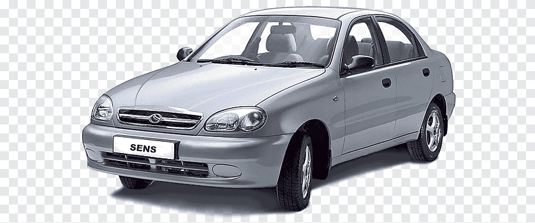

Історія моделі ЗАЗ Сенс
У 2000 році СП «АвтоЗАЗ-Деу» представило модель Lanos T100 із двигуном i коробкою передач виробництва України. Новий автомобіль одержав позначення ЗАЗ-Daewoo L-1300. Його було розроблено спільно українськими та корейськими фахівцями. Силовий агрегат Мелітопольського моторного заводу МеМЗ 301 об'ємом 1,3 л оснащувався карбюратором Solex і розвиває 63 к. с. при 5500 об/хв. Автомобіль оснащено 5-тиступеневою механічною коробкою передач українського виробництва. Модель пропонувалася з найпопулярнішим кузовом седан.
У 2001 році автомобіль L-1300 отримує новий двигун інжекторний МеМЗ 307 об'ємом 1,3 л потужністю 70 к. с. при 5500 об/хв[1].
У 2002 році за результатами конкурсу «Подаруй машині ім'я», який проходив з 17 вересня 2001 року по 28 лютого 2002 року, а остаточний варіант оголосили на автосалоні SIA'2002 , автомобіль отримав нове ім'я Daewoo Sens, замість цифрового позначення L-1300. Назву авто придумала сумчанка Світлана Солопченко[2].
- Будова автомобіля
- Комплектація
- Основні відмінності
- Оцінка автомобіля
- Ціна і гарантія
- Продажі
- Примітки
Продажі ЗАЗ Сенс
- 2006 р. 18 231
- 2007 р. 17 326
- 2008 р. невідомо
- 2009 р. 1 044
- 2010 р. 2 151
- 2011 р. 5 750
- 2012 р. 6 837
- 2013 р. 7 096